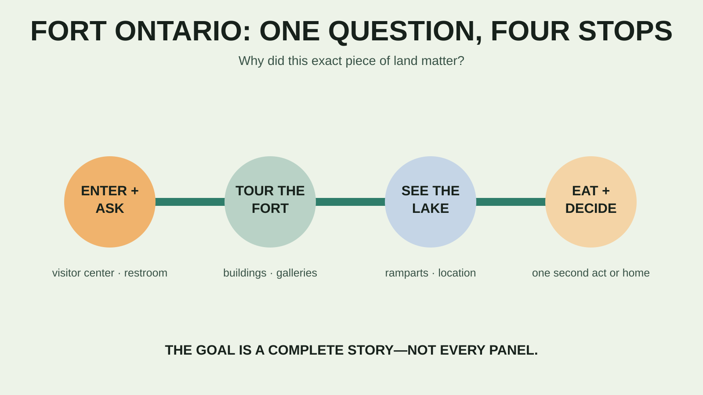

OSWEGO · SHORT HISTORY DAY
Fort Ontario With Kids: The Short History Day That Leaves Room for the Lake
Fort Ontario works because the objective is visible: tour the fort, walk the ramparts, eat before attention collapses, and stop. Do not turn a compact historic site into an all-day lecture.

Who this plan fits—and who should skip it
Good fit: school-age kids who like forts, tunnels, uniforms, architecture, military history or a physical setting that makes a story easier to understand. It also fits families who want a meaningful outing without a long hike or an expensive full-day attraction. Simplify or skip: children who are distressed by war or Holocaust history, anyone expecting a hands-on children's museum, families that need every historic interior to be step-free without confirming the exact tour route, or groups that cannot comfortably supervise kids around walls, stairs and underground galleries.
This is a different job from the Syracuse multi-stop day and the Cooperstown interest-split plan. Fort Ontario is useful because one small place can carry the whole morning.
Current 2026 facts to check before leaving
- Address and phone: New York State Parks lists 1 East Fourth Street, Oswego, NY 13126 and 315-343-4711.
- Drive: plan roughly 45 to 65 minutes from the Syracuse area, depending on your start, construction and Oswego traffic. Check live navigation before departure; this is an estimate, not a guaranteed drive time.
- 2026 season: the official listing says May 13 through October 12, 2026.
- 2026 museum hours: Wednesday through Saturday, 10 a.m.–4:30 p.m.; Sunday, noon–4:30 p.m.; closed Monday and Tuesday, but open Monday holidays. Special programs can alter access.
- Admission: the current listing shows $4 adults, $3 seniors/students and free admission for children 12 and under. Group rates are separate. Day use and picnicking are listed free. Verify prices before travel.
- Grounds: the state says the grounds are open year-round from dawn to dusk. That does not mean museum buildings, restrooms or tours are open.
- What is there: the official description lists historic buildings, exhibits, videos, ramparts, underground stone casemates and galleries, plus a post cemetery.
No ordinary individual reservation requirement is listed, but groups, programs and special events may operate differently. Call before a long drive if a guided component, specific gallery or access accommodation is essential.
Give the kids one mission before the first exhibit
Do not start with a date dump. Ask: why did this exact piece of land matter? From the grounds, kids can see the mouth of the Oswego River, Lake Ontario and the shape of the fort. The state's history explains that a series of forts at this strategic location were attacked repeatedly between the French and Indian War era and the War of 1812. The current fort dates to the early 1840s, with later improvements.
That gives the family a usable thread: location shaped the fort; the fort changed; the people inside it changed; the meaning of the site changed too. Let children find one defensive feature, one ordinary-life object and one detail that does not fit their idea of a fort.
The two-and-a-half-hour family itinerary

10:00 a.m. — Visitor center, restroom and the day's question
Arrive near opening on Wednesday through Saturday; Sunday requires a noon start. Confirm the day's tour format, open spaces, demonstrations and restroom access. Show staff the one thing your family most wants to see. Photograph the current map if permitted, and ask which stair, tunnel or exhibit tends to take families longest.
10:15 a.m. — Tour the fort while attention is fresh
Use the official route through the buildings and galleries. Do not let children climb, sit on artifacts or treat an underground room as an unsupervised game space. Give each child a small job: find the powder magazine, identify where soldiers slept, or notice how thick walls change light and temperature. A job keeps the visit active without pretending the site is a playground.
11:05 a.m. — Ramparts and the answer to “why here?”
Move outside and connect the fort to the lake and river. Wind off Lake Ontario can make a pleasant forecast feel colder at the site. Keep kids within immediate control near walls, slopes and road crossings, and use only areas open to visitors. The aerial shape is easier to understand from a map or photo than from ground level, so compare both instead of expecting children to perceive the whole star while standing inside it.
11:35 a.m. — Tell the Safe Haven story without flattening it
Fort Ontario was not only a military post. New York State Parks and SUNY Oswego document that 982 refugees from Europe were housed here from 1944 to 1946; most were Jewish people who had escaped Nazi persecution. This is a sourced historical fact, not a cheerful add-on. With younger children, focus on refuge, uncertainty and the difference between being admitted temporarily and being fully free. Do not turn people who survived persecution into a trivia number.
If your family wants to go deeper, use the Safe Haven Museum or SUNY Oswego archive as a deliberate separate learning block. Confirm the museum's current hours, admission and suitability independently; do not assume it follows the state site's schedule.
Noon — Picnic, then one decision
The state lists a picnic area and free day use. Bring a simple lunch or choose a confirmed Oswego food stop. After eating, decide between a short lakefront look, another planned Oswego stop, or home. Do not stack three attractions because the drive was under an hour. The day-trip cooler guide keeps lunch small and safe, while the day-trip system supplies the leave-before-it-breaks checkpoint.
Cost, food, restrooms and practical logistics
At the posted rates, a family with two adults and children 12 or younger has a low base admission cost, but verify every age, student classification and special-event charge at the site. Parking and picnicking are not reasons to assume every nearby service is free or open. Bring payment, water and lunch even if the plan includes Oswego food.
Use the restroom when you arrive and before leaving. Historic buildings can have constrained circulation, uneven surfaces, tight passages and limited places to sit. Keep a small layer and water with the adult rather than hauling a full trail load. The family daypack guide has a local-loop loadout that is enough for this visit.
Accessibility and pets
The state labels the visitor center accessible and directs visitors to call 315-343-4711 for site-specific accessibility information. Ask about the exact parking surface, entrance, restroom, interior route, rampart access, underground galleries, seating and tour format you need. “Historic site” is not one accessibility condition; each space can differ.
The posted policy says dogs on leashes are permitted on the premises. It does not promise dogs can enter every building, exhibit or program. Call about indoor access and current restrictions. A service animal is not the same as a pet; discuss the exact route with staff when access details matter.
Weather, safety and meltdown backups
Rain: prioritize open interior spaces, but do not assume every gallery is available; confirm at entry. Strong wind or cold: shorten the rampart block and use the car for lunch if needed. Thunder: move to a substantial building or enclosed hard-topped vehicle; a wall or tree is not a lightning plan. Heat: do the exposed grounds early, use shade and leave after lunch.
Child is done after one building: walk the outside loop, answer the “why here?” question and leave. Museum unexpectedly closed: do not pretend the grounds equal the full experience; use the dawn-to-dusk grounds only if conditions and posted rules permit, then choose a separate Oswego stop. History becomes emotionally heavy: pause, answer honestly at the child's level and continue the conversation later. Finishing every panel is not the objective.
Official check-before-you-go sources
Hours, admission, amenities, pet policy and site facts were checked August 30, 2026. Operations, programs and access can change.
- New York State Parks: Fort Ontario State Historic Site
- SUNY Oswego Archives: Safe Haven at Fort Ontario
- National Weather Service: lightning safety
MAKE THE WEEKEND COUNT
Useful beats heroic.
Build the day your family can finish well, then leave enough energy for the ride home.
More family plans